On this page I will sharing about my journey as I research and bulid on my final project! In my final project I have decided to bulid a clock that is able to measure the relative temperture and percentage humidity! Its name is the Environment Clock!
Here is a link to my Presentation Slide and Video about my project! Additionally here is a link to my Ownership Card
Firstly, before persuing my project I wanted to ensure my project is feasible, with that in mind I started researching on how others build clocks online! From youtube videos to Arduino project hub, I started to research on how I can build it, what are the components needed and how can I apply what I have learnt in Digital fabrications into the the project? As seen below I started to look on arduino project hub on how others make digital clocks!
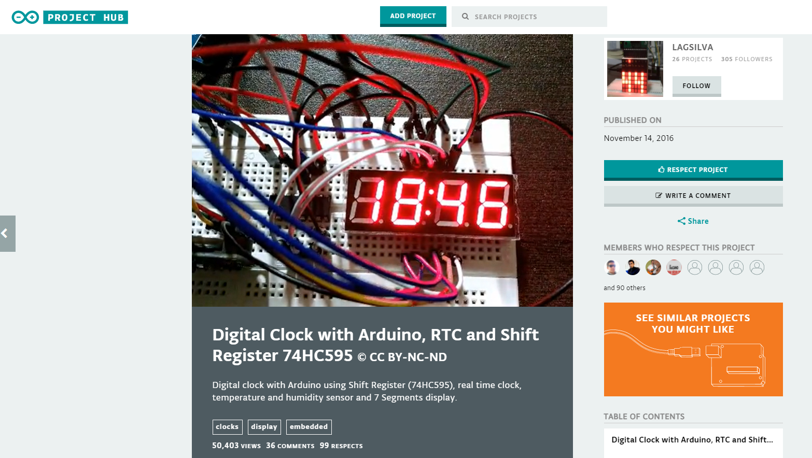Next up, I started sourcing out the different electronic parts needed and how is the overall cicuit going to look like. With that I started consulting my lecturer, Mr Rodney, on how my overall circuit is going to look like. Additionally I started sketches on how my clock will look like and how I can integrate the circuits into the casing. Below are pictures of my sketches and basic layouts of how circuit would look like!
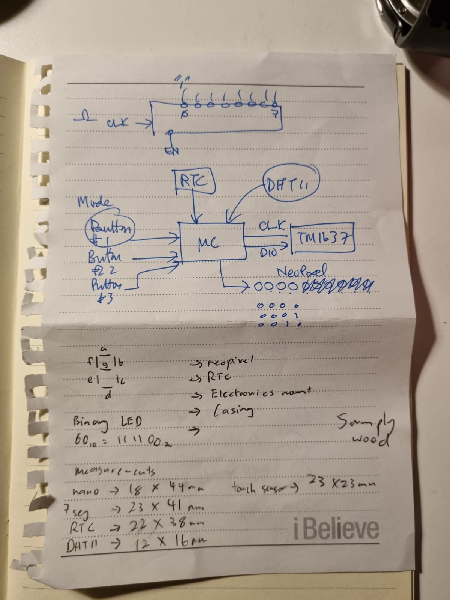 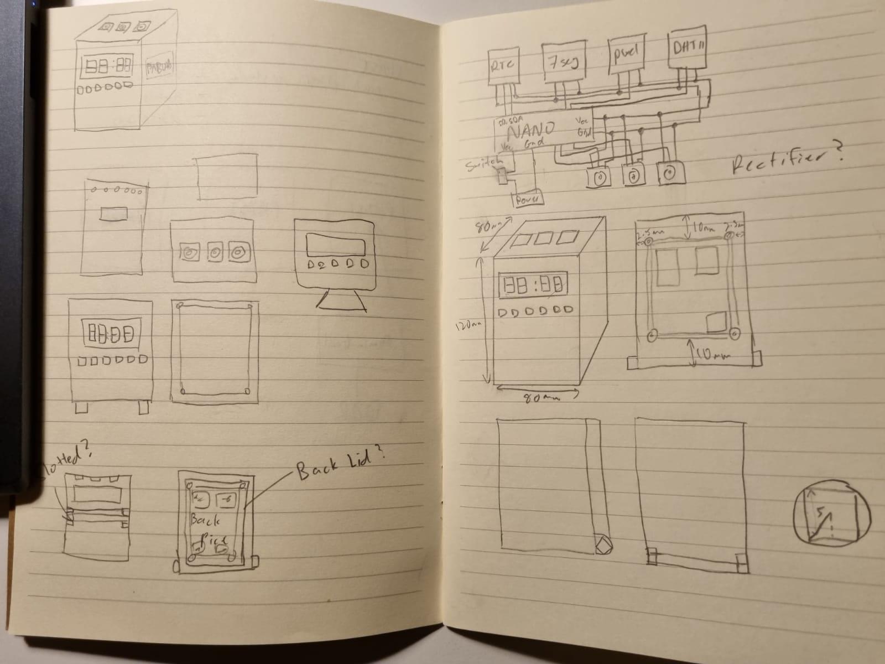Following that I started to gather my components are started to test how it all works individually, learning how to code each component one by one! First up, the thermal sensor, DHT11. This sensor is able to measure the relative temperature and humidity, giving an output with the relavant data. Below is a picture of the circuit I have made using the DHT11, showing the temperature and humidity on the thru serial output.
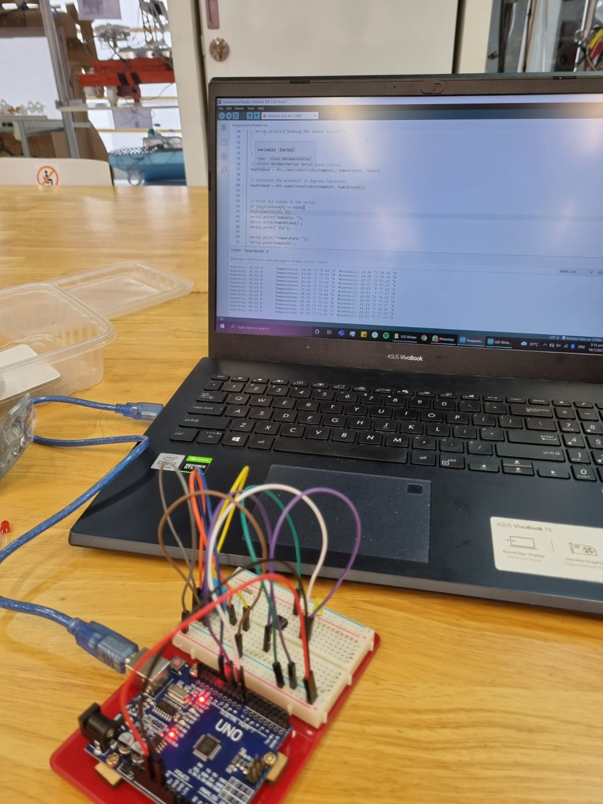Next, I tested the DS3231 RTC module showcasing the time, date and day. An interesting function of the RTC module is that it can store the time without having an external power. This is because it has a battery attached to it to keep its internal clock running! Following that I started to test out the neopixels. The neopixels are meant to display the seconds of each minute, with one LED lighting up after 10 seconds, a total of 6 LEDs are used.
Next, the TM1637 4-digit 7-segment display. It is a digtal display, providing 4-digit displays with only 2 I/o lines. In conventional 7-segment displays are there 7 I/O lines for each digit, totaling up to 28 wires! With the TM1637, I save the usage of 26 wires, having a cleaner circuit!
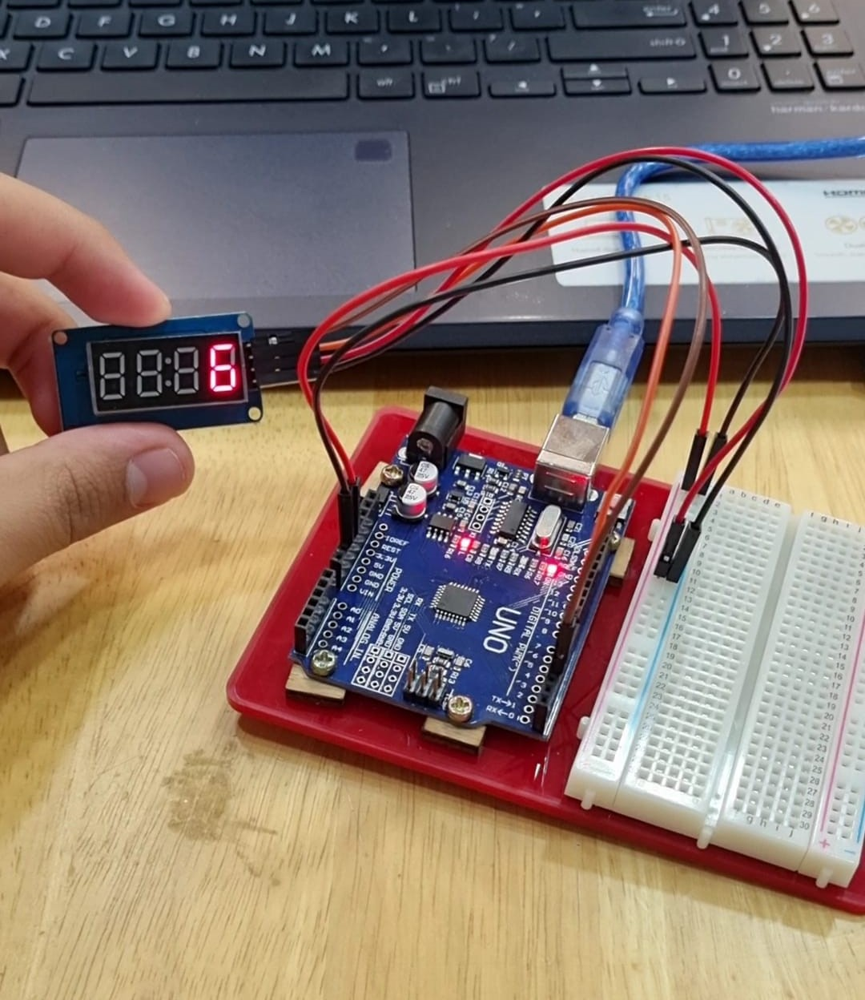Lastly, I tested the touch sensors so that I can use them to activate the temperature and humidity. Below is a picture of the touch pad connected to a neopixel strip, activating the strip when there is a high input.
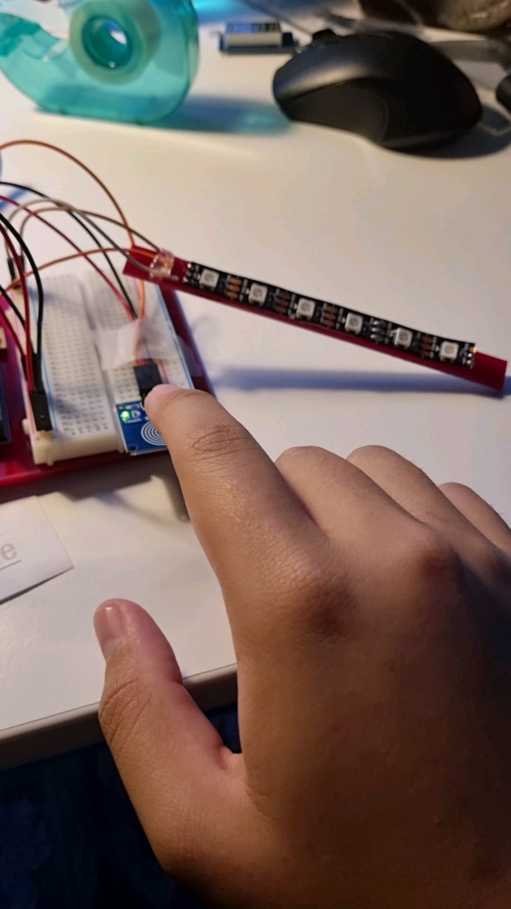Next up, I started to fabricate my electronic stand and the casing I am going to house the electronics. Firstly, I drafted the case and the elctronic mount on Fusion 360!
Following that, I printed the electronic mount using the software cura, slicing the stl file and converting it into gcode. After that, I sent the gcode to the Ultimaker 2+ where my print started!
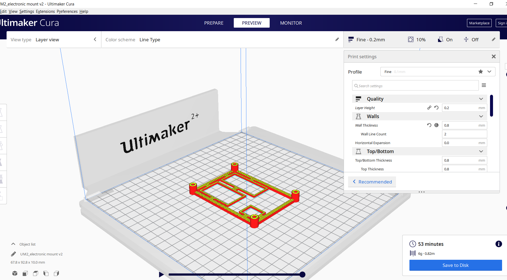 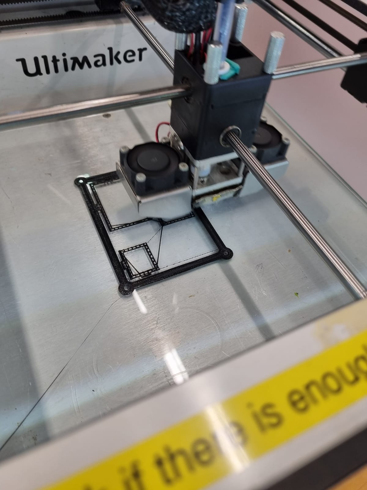The settings in Cura are as follows:
Next, I proceded to head over to 11C to fabricate my clock casing! I decided to use the plywood as it is the most easily accssible, with a thickness 5mm. Upon knowing the thickness I simply changed the measurements of my draft. This was extremely simple as when I was drafting my casing I used the parametric function. This means that within one step I can change the thickness and the size of my tabs will change automatically!
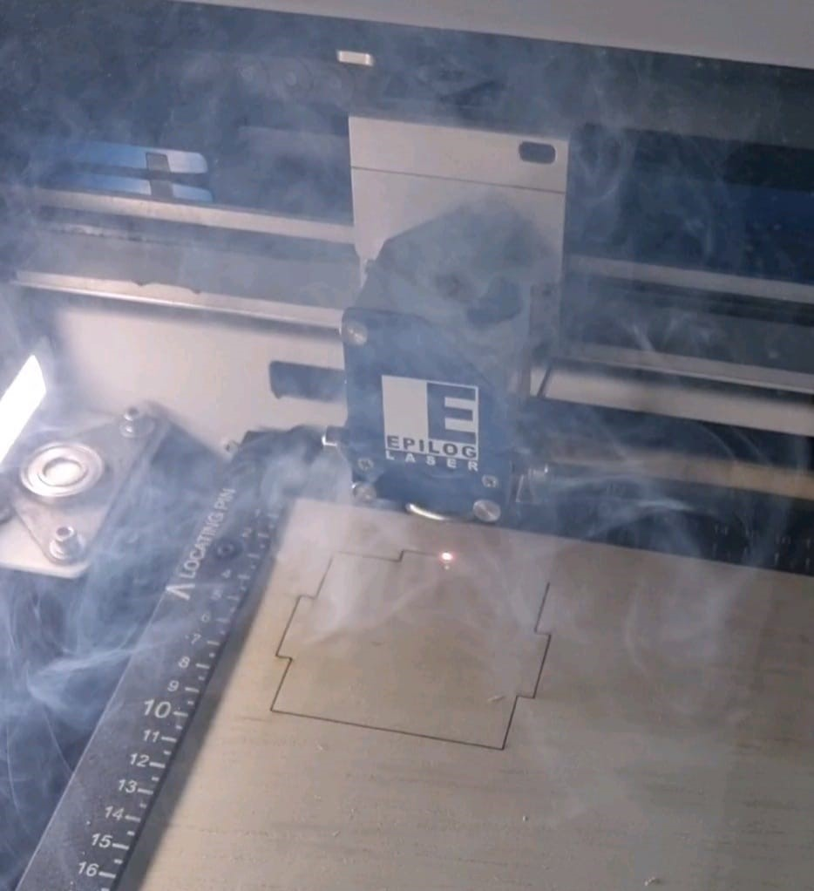Here is the laser cutting settings I used before cutting:
After fabricating and testing all the required circuit components, I started to assemble to electronic components together, utilising arduino uno as the motherboard, being the "brain" of the circuit. First off I needed to connect all my components to a power input and a ground port. My components do not need much voltage power thus the 5v output port was sufficient! Next, I started to assign each data cable to each data port. From there I can start coding the programe to run all the components, taking inputs from sensors such as the touch sensor, RTC module and the DHT11. And sending outputs to the actuators like the TM1637 and neopixels.
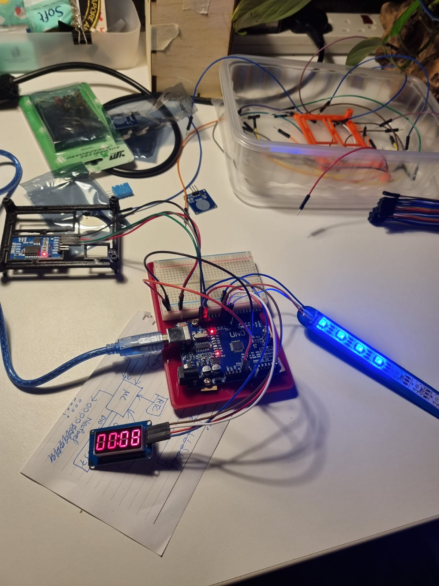Following that I started to assemble the parts I fabricated, screwing in the electronic mount and fitting the overall casing ensuring that all my measurments are correct!
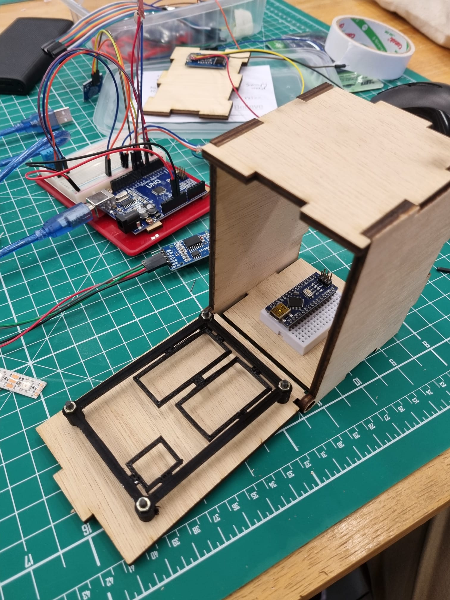And finally the last step, integration! Here I started to put everything together, this time I switched to the arduino nano from the uno so that less spaced is used! I tweaked the Arduino IDE code to the respective ports each sensor and actuator is connected to. However I encountered a problem, I noticed that I needed multiple 5v and ground ports as the nano has only 1 port for each. To solve that problem I connected the ports to each row on the mini breadboard, now I have multiple 5v and ground ports! Below is a picture of the integration process and a video of my final product!
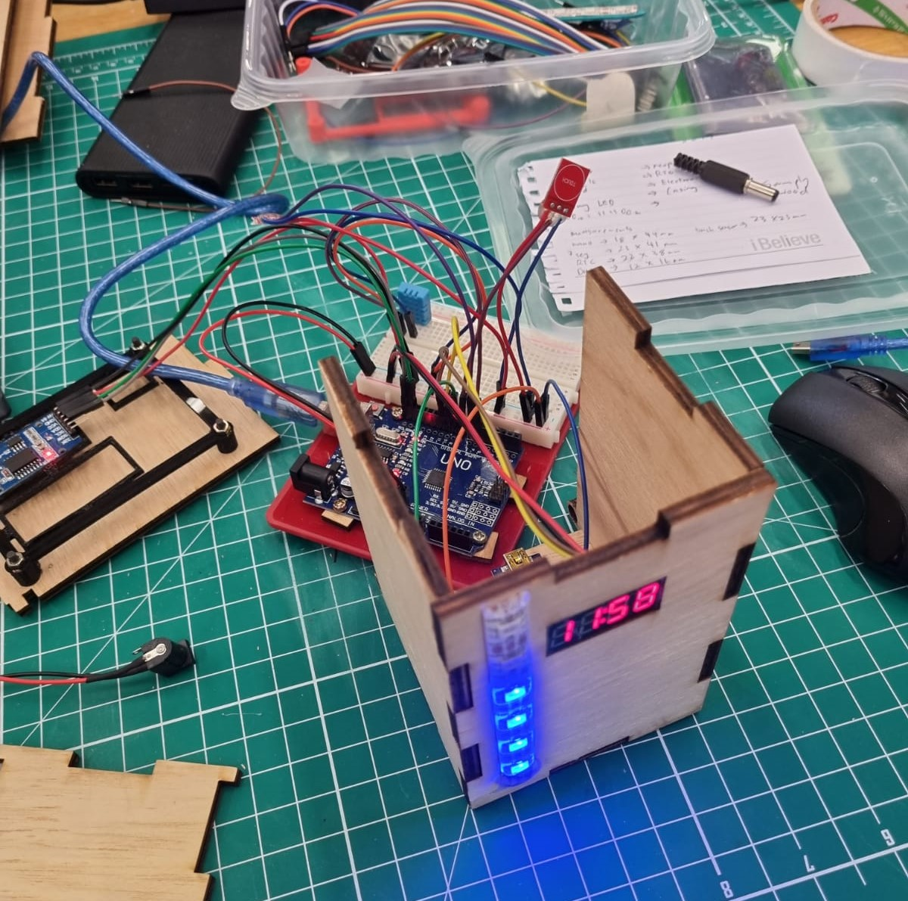EP1000 has been an enjoyable module even though parts of it was online, I would like to thank my lecturer Mr Rodney and the staff at the FABLAB for their help!
Click here to return back to projects!!
{kind=link}
{kind=link}